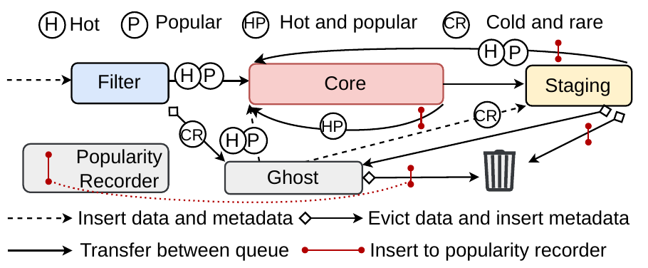

Jinhao Guo
I'm a Ph.D. student in the School of Computer Science at Peking University, advised by Prof. Diyu Zhou, Prof. Xiaolin Wang, and Prof. Yingwei Luo. I received my B.S. in Computer Science from Peking University in 2026.
News
- I have completed my undergraduate thesis defense!
- Merlin is conditionally accepted to OSDI 2026.
Research
I'm now devoting myself to Hardware-Software Co-Design, and have interests in ML Systems. Some papers are highlighted.
Experience
Peking University
– Present
Beijing, China
Ph.D. student in Computer Science
Advised by Prof. Diyu Zhou, Prof. Xiaolin Wang, and Prof. Yingwei Luo
Peking University
–
Beijing, China
B.S. in Computer Science and Technology
School of Electronics Engineering and Computer Science